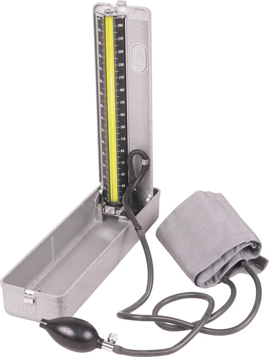
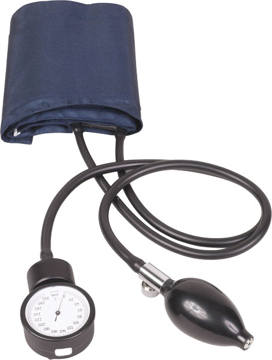
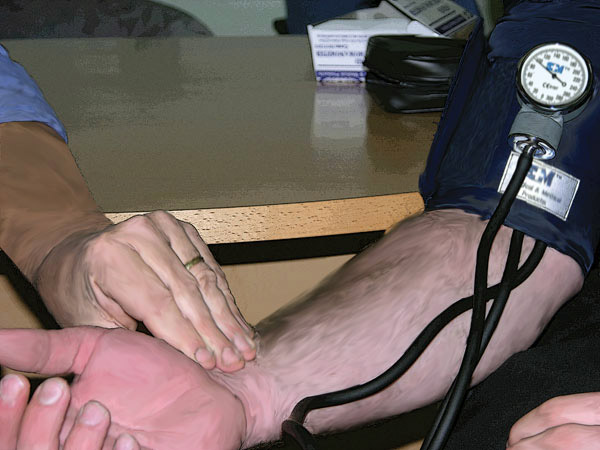
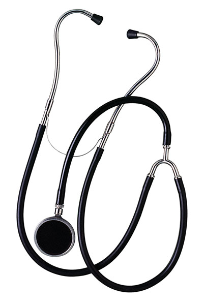
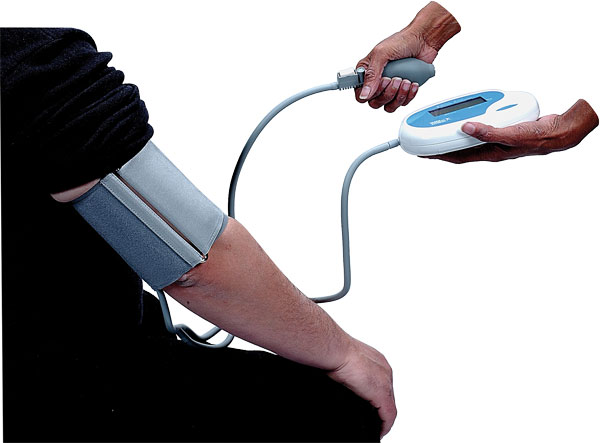

Taking a Blood Pressure
Taking a Blood Pressure
1. If possible, the casualty should avoid smoking or using caffeine for 30 minutes prior to having their blood pressure taken.
2. Explain to the casualty what you are going to do. Ask the casualty to sit and rest for a few minutes first.
3. The casualty should be either supine or sitting, relaxed, with arms at heart level.
4. Remove all thick clothing from the arm to be used. Use the left arm if possible.
5. Select an appropriate sized cuff and:
 a mercury sphygmomanometer
a mercury sphygmomanometer
 a blood pressure machine, or
a blood pressure machine, or
 an aneroid sphygmomanometer.
an aneroid sphygmomanometer.
6. Find the brachial artery along the inner arm.
7. With the person sitting comfortably and their elbow resting on a surface, wrap the cuff smoothly around the upper arm centering the bladder over the brachial artery. The cuff should feel snug.
 The cuff needs to be positioned about 2 cm above the
The cuff needs to be positioned about 2 cm above the
elbow. Usually a Velcro strip makes this easy.
 The cord from the cuff should run down the inside of
The cord from the cuff should run down the inside of
the arm straight to the machine. Make sure no kinks are in the tube.
8. Select appropriate method:
Palpation
 Close the valve and inflate the cuff until the brachial pulse disappears. Inflate a further 30mm/Hg.
Close the valve and inflate the cuff until the brachial pulse disappears. Inflate a further 30mm/Hg.
 Open the valve and deflate slowly and steadily while feeling for the brachial or radial pulse.
Open the valve and deflate slowly and steadily while feeling for the brachial or radial pulse.
 Note the reading when the pulse returns.
Note the reading when the pulse returns.
 Fully deflate the cuff and record the reading eg. 120/P ('P' stands for palpation)
Fully deflate the cuff and record the reading eg. 120/P ('P' stands for palpation)
Stethoscope
 Apply the hub of the stethoscope over the brachial artery.
Apply the hub of the stethoscope over the brachial artery.
 Close the valve and inflate the cuff until the sound of the brachial pulse disappears. Inflate a further 30mm/Hg.
Close the valve and inflate the cuff until the sound of the brachial pulse disappears. Inflate a further 30mm/Hg.
 Open the valve and deflate slowly and steadily.
Open the valve and deflate slowly and steadily.
 Listen for the return of the sound of the brachial pulse sound. This is the systolic pressure.
Listen for the return of the sound of the brachial pulse sound. This is the systolic pressure.
 Listen for the cessation of sound. This is the diastolic pressure
Listen for the cessation of sound. This is the diastolic pressure
Electronic
 Switch on the machine. The panel will illuminate and numbers will display. After a second or two press the start button.
Switch on the machine. The panel will illuminate and numbers will display. After a second or two press the start button.
 The machine will automatically deflate the cuff.
The machine will automatically deflate the cuff.
 The machine will advise when complete and display results.
The machine will advise when complete and display results.
9.
Record results.
10.
Take two readings 2 minutes apart and average them.